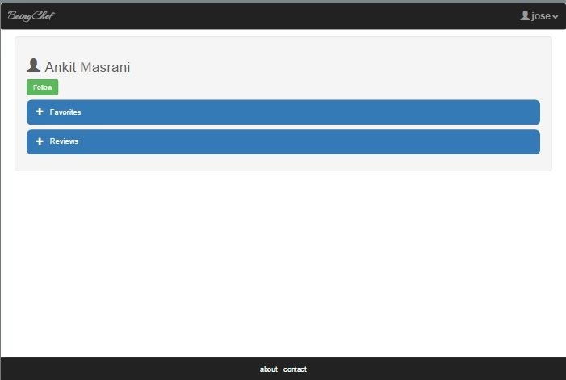
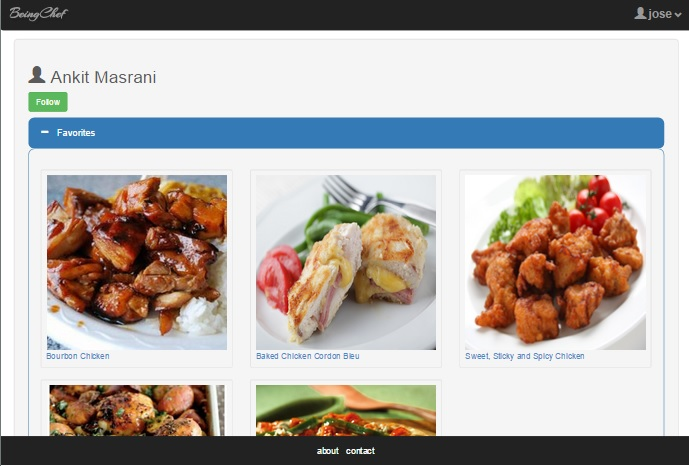
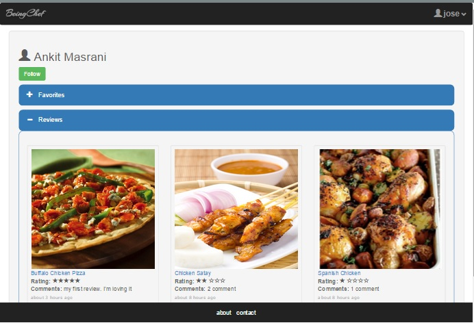

BeingChef Public User Page
This page displays the user's public information: Recipe's marked as favorites and
recipes for which reviews and comments are provided.
- Shown below is public user page.
-
The user public page can be visited by following the link on the comments provided for
a particular dish or via searching for a user from the Following tab on the dashboard.
-
As you can see below, the user's favorite recipes and reviews can be viewed as expand/collapse
sections to view the data in an organized manner.
-
After logging into the system, the user can additionally Follow/Unfollow the public user's page it is
visiting. There are validations in place to prevent the user from following itself.
-
Collapsed sections:

-
User Favorite's section expanded:

-
User Review'section expanded:
